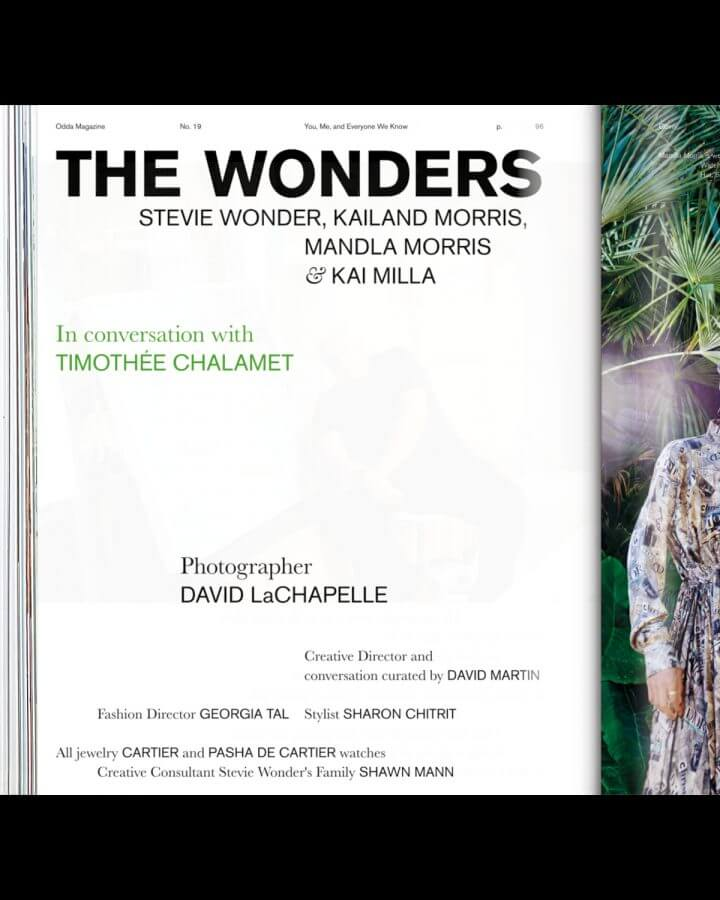
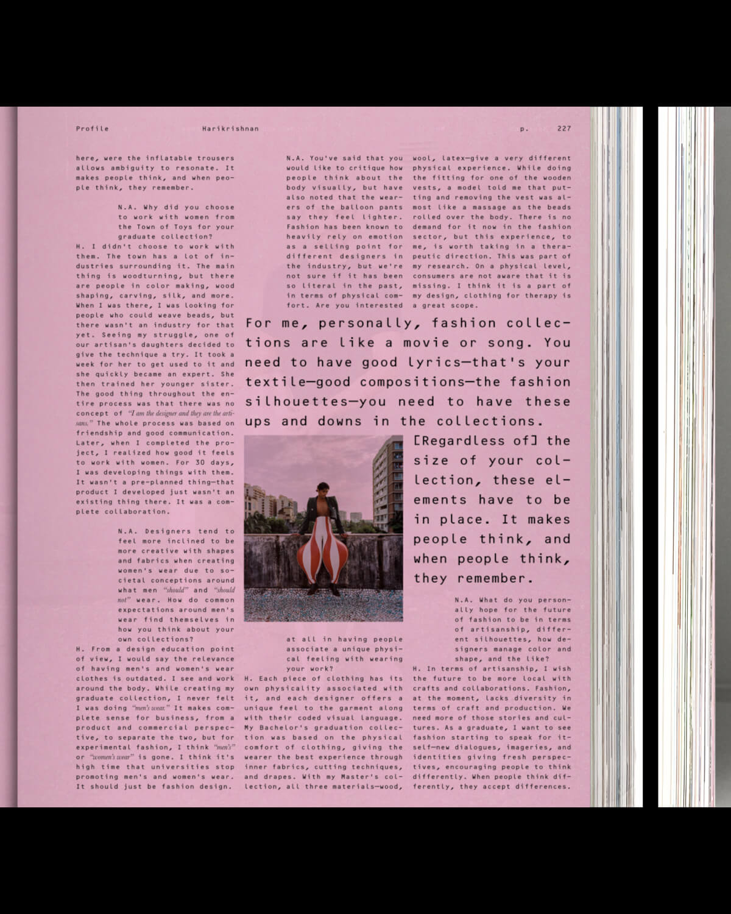
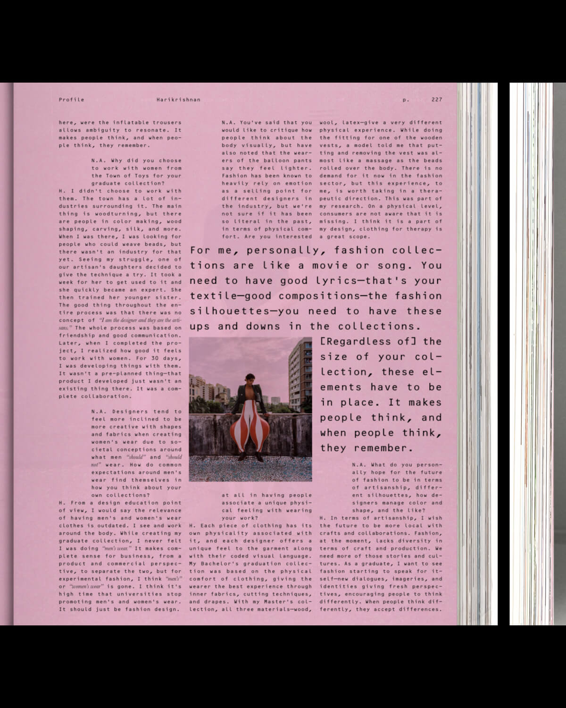

- Farfetch private client - Farfetch private client - Farfetch private client - Farfetch private client - Farfetch private client - Farfetch private client - Farfetch private client
- Branding, editorial - Branding, editorial - Branding, editorial - Branding, editorial - Branding, editorial - Branding, editorial - Branding, editorial
2024
N-E has designed the visual identity of FARFETCH PRIVATE CLIENT, the highest status membership in the FARFETCH fidelity programme. FARFETCH PRIVATE CLIENT and its visual identity applications offer tailored experiences which are unique, meaningful, inspiring, high-level, influential, cultural, sound, consistent, distinguished, recognizable, exclusive and extraordinary but, above all, they are memoreble: worth to be remembered. In order to achieve all this, N-E propose an application system which allow people to remember those once-in-a-lifetime moments that FARFETCH PRIVATE CLIENT gives its customers, re- living an emotion such as a dinner or collecting objects such invitation cards or recommendations of one's personal stylist.
FARFETCH wishes to enhance every detail, giving best service and tailored experiences; inspiring its clients beyond the realm of fashion; fostering a lifestyle linked to luxury and culture and creating a genuine membership feeling with a personal stylist plus a fashion concierge service or access to unique experiences and memorable events.
Tiffany & Co
Digital
2024
Animations for TIFFANY & CO to welcome spring. Each of them reinterprets an archive advertisement with themes of flora and
fauna.
Animation inspired by an image photographed by BOB RITTA for the May 1963 issue of HARPER'S BAZAAR MAGAZINE.
Animation inspired by an image for the May 1968 issue of HARPER'S
BAZAAR MAGAZINE.
Animation inspired by an image for the January 1969 issue of
PROMENADE magazine.
- Power Talents Agency - Power Talents Agency - Power Talents Agency - Power Talents Agency - Power Talents Agency - Power Talents Agency - Power Talents Agency
Branding, digital
2023
Visual identity design for POWER TALENTS AGENCY under the umbrella concept of the union. This game changer representation agency is the link between talents from different disciplines related to fashion, culture or entertainment and the main international brands and other personalities.
To graphically represent the union, link or nexus that characterizes POWER TALENTS AGENCY, there is no line spacing: images and paragraphs are always joined together creating blocks.
POWER TALENTS AGENY and its visual identity must seduce and communicate a diverse audience by uniting the classic and contemporary. For this, a custom font has been designed: LINK DISPLAY.
"Starting from the serif typography that appears on the original cover of the single PEOPLE HAVE THE POWER by PATTI SMITH and the use of small caps, the characters have been modified based on the theory and iconic work of HERB LUBALIN: adding, for example, ligatures and alternative characters."
"They believe in talents as the new means of communication, proposing actions and experiences adapted to our time: PEOPLE HAVE THE POWER."
The POWER TALENTS AGENCY website is characterized by the union of an exaggerated, risky and genuine aesthetic capable of organizing information in a clear and orderly manner.
The link, in harmony, between the excess of information, texts and images without line spacing, and empty spaces is present in the new website. A contrast present throughout the visual identity of the project.
Lighthouse
Branding, digital
2023
Credits
New identity website design for LIGHTHOUSE, a full-service film and photography production agency that also represents industry talents and artists.
In the new LIGHTHOUSE web identity, the use of the logo typography has become the main typography. This display font provides character and own voice to the production and artist management company founded by EDUARDO SAYAS.
One of the objectives has been to value, visually, the narrative in the LIGHTHOUSE proposals and projects. For this, resources and compositional elements from the publishing world have been used, specifically fashion magazines: the date, numbering, credits, the incorporation of highlights or the use of italics.
In the project, the name of LIGHTHOUSE as the light that illuminates the path to bring any project to a successful conclusion. On the other hand, lighting is inherent to photography and the audiovisual world, areas of work of this production company and representation agency. To make it happen, light has been associated with the effects of the new web identity such as blurs or flashes. In addition, the cursor is a spotlight or flashlight that guides the user in web browsing
Alvaro Talarewitz
Editorial
2023
Graphic system design for the publication of all the editorial works of the writer ALVARO TALAREWITZ. The book covers are divided into zones where the information is distributed using two contrasting typographies.
The HELVETICA font, common to all books, is used for the title, literary genre, year and ISBN. In contrast, the other typography is used for the subtitle and the author: ALVARO TALAREWITZ.
Color and the use of textures are other graphic resources that change and evolve in each book. The graphic system can be seen in two of his works: the collection of poems "EL AMOR Y LA VERDAD SON COMO UN PERRO AFÓNICO" and the novel "LAS ESTRELLAS QUE NOS MIRAN"
JUAN GELMAN's quote "reading is traveling by oneself", the series "I GOT Up" (1968-79) by the artist ON KAWARA or JOSEPH BUYS compositions have been the source of inspiration to design a writer stamp and some postcards with images taken by ALVARO TALAREWITZ. These photographies illustrate the concept of each literary work.
Faw books
Branding
2023
Credits
New visual identity design of FAW BOOKS under the umbrella concept of rare; understood as something unusual, peculiar or exceptional. FAW BOOKS is a SPAIN-based independent project that aims at stimulating ideas, concepts and reflections around books. The initiative encompasses a wide range of areas and activities including a bookroom, archive and e-shop.
Quality is a value that defines FAW BOOKS and its archive. Each book or publication, carefully selected, is an attractive, seductive object with a cultural or artistic value. The new FAW BOOKS logo must convey this added value, the quality seal that characterizes it. For this, a
"signature" has been designed that unites two graphic elements: the logo and the monogram.
The logogram, like the services offered by FAW BOOKS, is a flexible element; able to adapt to all formats and needs, both physical and digital. As a result, the visual identity has infinite logograms.
In addition to a flexible logogram, the FAW BOOKS visual identity emphasizes other values that make the project unique.
To organize the extensive archive, FAW BOOKS identity gives prominence to a nomenclature system that allows all books and publications to be named with a unique code that identifies and classifies them thanks to three blocks: category, entry number and publication initials. A functional system that also makes the identity more attractive.
FAW BOOKS is much more than an e-shop where you can find a careful selection of used, rare books and other publications that are characterized by their influence on society and their ability to generate new conversations or content.
The project offers consultancy, lending, educational programs, organization of personal libraries, and personalized search/investigation service. In addition, they collaborate with institutions, companies or simply individuals. Therefore, the new FAW BOOKS website must seduce buyers but also give visibility to all offline services. In short, show FAW BOOKS in its entirety.
The FAW BOOKS website recovers own resources from the publishing world.
The indexes are the reference to design a "content tree" system that organizes all the information: from the menu to the search filters or the view mode.
Faw books
Art Direction
2023
Credits
For the launch of the new visual identity of FAW BOOKS, N-E has designed three corporate posters illustrated with the logo and images of GERAY MENA. Emphasizing the umbrella concept, rare, the project shows itself in a seductive, attractive, romantic and mysterious way.
The concept tries to show the editorial publications of FAW BOOKS as common obiects present in our lives. GERAY MENA turns images into narrative key visuals full of layers. As ROLAND BATHES pointed out, a work of art should be like an onion; the context and clues to hidden concepts can only be understood by spending time looking at the work over and over again. From the complete image to the still lives and details.
Stine Goya
Branding
2023
Rebranding for STINE GOYA. a creative process of two years of work that has included, among other things, the design of RISE. A custom typography for the logo and communication of the DANISH fashion brand and a monogram that is also present in clothing and accessories.
For the STINE GOYA's monogram, the work focuses on the union of the "S" and the "G" to create a contemporary form. The result is a recognizable icon that unites both letters in an abstract, organic, elegant and sexy
way.
"... a brand with a voice, we have an obligation to use that voice for good, to help contribute to a more ethical,.." STINE GOYA is known for constantly communicating with her community: HOUSE OF GOYA.
Therefore, everyone has a specific voice. For this reason, this value is associated with a graphic resource that has a specific personality, capable of contributing that recognizable and unique value to the project. Designing a typography specifically for STINE GOYA is the graphic solution to give personality to this voice. Any word or message is instantly recognizable.
HUMANIST fonts are the starting point to create this new typeface. RISE FONT is the result of an exercise that aims to create something new and unique inspired in the past. A meticulous work where decorations are removed to create a cleaner, sharper and more direct voice.
On the other hand, the several ligatures between characters show the union between STINE GOYA and its community. For this reason, the use of ligatures between glyphs is especially relevant in the pieces linked to
HOUSE OF GOYA.
In the garments of this DANISH brand, the color and the unique patterns are inspired by the worlds of design and art. Each collection is built with a solid narrative that is based on a concept and a universe of references. Therefore, creativity is the main strength of STINE GOYA and the rebranding's umbrella concept.
"Our collections and DNA stand for fierce individuality and freedom. Be yourself." STINE GOYA wants her audience to be FREE, to be able to express themselves. Without restrictions.This is a concept inherent to the brand and its community: HOUSE OF GOYA. Therefore, it is a value that must be reflected.
To illustrate the freedom associated to composition, the new identity communicates through visual poems inspired by the work of artists like VICENTE HUIDOBRO, ED RUSCHA or LAWRENCE WEINER.
"...Our goal is to inject joy and fearless confidence into the lives of our audience."
Like STINE GOYA, N- believes that color has the power to transmit emotions, and also to improve our experiences.
For this reason, orange is the color for STINE GOYA, a tone that communicates the value of joy. Under the umbrella of art and creativity, the inspiration also comes from the work of great artists to find the specific corporate color.
In this case, the reference is LE CORBUSIER's architectural colour theory published in
1931: ARCHITECTURAL POLYCHROMY. A catalog in order to create harmony between colors by creating combinations that affect human emotions. For him, this choice "is bright, a dynamic orange. Young and optimistic".
"In a facelift for fashion brand Stine Goya, N-E uses ligatures to reflect community." It's Nice That. –"In a facelift for fashion brand Stine Goya, N-E uses ligatures to reflect community." It's Nice That. –"In a facelift for fashion brand Stine Goya, N-E uses ligatures to reflect community." It's Nice That. –"In a facelift for fashion brand Stine Goya, N-E uses ligatures to reflect community." It's Nice That. – "In a facelift for fashion brand Stine Goya, N-E uses ligatures to reflect community." It's Nice That. – "In a facelift for fashion brand Stine Goya, N-E uses ligatures to reflect community." It's Nice That. –
Stine Goya
Art Direction
2023
Rebranding for STINE GOYA, a creative process of two years that has included, among other things, the design of RISE, a custom typography for the logo and communication of the DANISH fashion brand and a monogram that is also present in clothing and accessories.
Rafa Munárriz
Digital
2022
Credits
Website design for the artist RAFA MUNÄRRIZ, a project that extends the identity from the editorial project: ESPACIO RELATIVO. The site is conceived as a frame without background, where everything is content.
The project is treated as yet another of the artist's works.
RAFA MUNARRIZ composes and organizes his work, creating a living and genuine digital space. Concurrently, the website is also a living retrospective of the artist's career.
- "Hay un volcán encima de casa" - "Hay un volcán encima de casa" - "Hay un volcán encima de casa" - "Hay un volcán encima de casa" - "Hay un volcán encima de casa" - "Hay un volcán encima de casa" - "Hay un volcán encima de casa"
Editorial
2022
Credits
"HAY UN VOLCAN ENCIMA DE CASA" book and the exhibition's vinyls design; a personal project of PABLO CURTO and ALBA GALOCHA.
After two years, the unpublished exhibition includes the book along with eight embroideries, a dual projection of photographs, fragments of a WHATSAPP conversation between PABLO and ALBA, and the rest of a piece of mud.
As the curator CRISTINA VIVES explains, the project shows two personal stories, painful but empowering, united in a creative process whose main stage is the island of FUERTEVENTURA.
The creative process between N- and its authors has been nourished by numerous conversations and reflections that have resulted in a delicate design where every detail is important.
The book, edited by TERRANOVA, is reversible, it has no beginning or end. The same graphic resources are present in the vinyls of the exhibition.
cultureespagne.fr
branding, digital
2022
Credits
Conceptualization and design of the identity and website of
CULTUREESPGANE. FR, a platform for the dissemination of SPANISH cultural and artistic expressions in FRANCE.
Promoted by the OFFICE CULTUREL DE L'AMBASSADE D'ESPAGNE in FRANCE, which aims to develop and intensify cultural cooperation between FRANCE and SPAIN, CULTUREESPGANE. FR (C.ES. FR) encourages mutual understanding and promotes collaboration and development between the two countries. Special priority is given to avant-garde SPANISH artistic expression and to the dissemination in FRANCE of SPAIN's emerging artistic production.
For the graphic system and its logo, the union between both countries and its connection with the world of art and culture is proposed thanks to the use of 3 fonts: IBARRA REAL (SPAIN), GARAMOND (FRANCE) and UNIVERS (CULTURE).
- digital visual studies - digital visual studies - digital visual studies - digital visual studies - digital visual studies - digital visual studies - digital visual studies
branding, digital
2022
Credits
Identity design and online presence for DIGITAL VISUAL STUDIES
(#DigitalVisualStudies @uzh.ch). A new website for a 5-year cross-institutional DIGITAL HUMANITIES project promoting multidisciplinary research at the intersection of VISUAL CULTURE and COMPUTER SCIENCE.
Funded by the MAX PLANK SOCIETY and hosted by the UNIVERSITY OF ZURICK, DIGITAL VISUAL STUDIES is tightly connected with a first-rate national and international network of partner institutions and digital initiatives and seeks to generate avant-garde research and methodological, technical and intellectual innovation.
adg.l.2021
- art direction, editorial - art direction, editorial - art direction, editorial - art direction, editorial - art direction, editorial- art direction, editorial - art direction, editorial
2022
Credits
The MAGABOOK ADG Laus Awards is a publication or, more specifically, a yearbook that compiles the best creative projects in the field of graphic design over the course of a year. From N-E, we go one step further, designing something that is closer to an object and that provides an experience: a box that must be discovered. Thought as "something to keep", the user is forced to dedicate some time to the project, which is still an editorial project.
We live in an era where the digital world and the physycal coexist and are increasingly connected. Objects, even through a screen, are still relevant and define us as individuals. This is what GEORGES PEREC tells in his book "LES CHOSES" (1965).
Following this discourse, GERAY MENA has collaborated in this project portraying TONI MISERACHS, LAUS DE HONOR AWARD 2021, through them. The images show some details such as earrings or a watch next to other objects that are relevant describing her personality.
From N-E, we developed the MAGABOOK ADG LAUS AWARDS 2021 as a reflection of our time and, therefore, we have rethought the format from its foundation. We are talking about a period in which we have been forced to adapt to new scenarios, rethink the way we work and change the way we interact. A new context where some aspects have been accentuated such as the duality between digital and physical. This sense of bewilderment in the face of a new reality is reflected in the proposal: the reader faces a graphic abyss; must adapt and understand the new codes and rules of MAGABOOK 2021.
The relationship with time is present throughout the project.
For this, we have been greatly inspired, both graphic and conceptually, by the work of ON KAWARA (1932-2014). This JAPANESE conceptual artist addressed throughout his life the idea of time and how it passes; showing how it can go beyond and reduce historical experience.
The MAGABOOK project is divided into two publications: the book and the magazine. They relate to the works "DATE PAINTINGS" for the digital part and with "ONE MILLION YEARS" for the design of a publication that aims, in a way, to archivetime.
The link between physical and digital worlds is especially reflected in the THE DG LAUS AWARDS 2021. This publication has been renewed over the years thanks to the work of different studios, incorporating groundbreaking elements that we have inherited in order to create a new concept where the barrier between the physical and digital disappears. In this way, a 360° experience is created. The book presents the winning projects, for the first time, without images.
Next to the information of each winner, a QR code appears. An element that seemed obsolete but that, in this new context, has returned to our daily lives. The QR are the nexus between the physical part and the digital. Being faithful to the will of reflecting our time, we have created an Instagram accountwhere the images of all the winnersappear. In this way, the reader can interact with the publication: comment on it, share it or save it as a reference.
The feed design of the INSTAGRAM account is inspired by the work "DATE PAINTINGS" (1966-2013) by ON KAWARA. For almost 50 years, the artist documented numerous dates on a monochromatic canvas painted in shades of red, blue or gray. On it, he wrote in white the date of the day on which it was painted.
In a project where time is the umbrella concept, the two publications of the MAGABOOK AD LAUS 2021 are treated as a long timeline, a kind of parchment or ticket. In this way, we break the classic structure of the book by eliminating covers; the content is cut at the bottom of the page and continues on the next one seamlessly. The pages reflect a routine in which every day is the same and, in turn, different.
The MAGABOOK AD LAUS 2021 is the part that contains interviews and articles, a content designed to be read. From N-E, we believe that the human being continues to feel more comfortable consuming this type of content in physical format.
Although in both parts of the magabook, monospaced fonts are used, for the magazine we chose the CENTURY SCHOOLBOOK MONOSPACED. It is a serif typeface that gives the publication a more editorial character. In contrast, for the book we picked APERCU PRO MONO. In addition to being one of the studio's corporate typefaces, thus leaving a small "easter egg" in the project, it is a sans serif font that is used to collect data.
tommy hilfilger
digital
2021
Credits
Design, in collaboration with JOHANNA JASKOWSKA an IG Stories Filter for a TOMMY HILFIGER international release.
Using TOMMY HILFIGER's corporate colors, red and blue, in combination with black; the two variations impact intense filter play with light, contrast and intensity to reflect the values of the fragrance.
dancassab
branding
2020
Design of DANCASSAB's new corporate identity. The pieces have messages that are addressed to the buyer using always the SINERGIA typography, a font specially designed for the brand.
Handmade in MEXICO, DANCASSAB designs leather garments of bespoke quality and timeless appeal. They are built to be passed down, and loved through generations.
The new SINERGIA typography reflects some of the brand's values, including the balance between timeless and unique. To do this, the shapes of two of the most iconic fonts, TIMES NEW ROMAN and HELVETICA, were united to achieve an eclectic but harmonious result.
Design of the new packaging for DANCASSAB's (@dancassab) new corporative identity. The pieces have messages that are addressed to the buyer using always the SINERGIA typography, a font specially designed for the brand.
Writing texts and design for the manifesto of DANCASSAB's new corporative identity. A publication that reflects the designer's imaginary in many messages and images. An eclectic universe where opposites coexist in harmony.
Design of some posters for DANCASSAB's SS22 campaign. The new corporative identity and the SINERGIA typography, a font that reflects some of the brand's values, including the balance between timeless and unique.
odda magazine
editorial
2020
Design of ODDA MAGAZINE 19th issue, a bi-annual, contemporary fashion and culture magazine based in NEW YORK. A platform for creatives, artists, curators, performers or models where self-expression, imagination and dreams are brought to the next level. ODD is also connected to everything that brings excitement and passion.
After 8 years, ODD MAGAZINE shows its fascination for strong personalities, people with character and also for the new wave of designers, creatives and talents who are changing the worldwide culture. ODDA MAGAZINE connects the influence of fashion with global innovation. Past connected with the present to portray the future of fashion and culture. For ODDA MAGAZINE, it's important to look back to understand what is next to come.
ODDA comes from the Greek word "ODE". An ode is a lyrical composition with a high pitch, generally praising something or someone.
Usually, an ode is destined to be sung and deals with very diverse topics, including, on many occasions, a thought or personal reflection of the poet. In ANCIENT GREECE, where it originates, choral odes were very successful, destined to be sung or recited by two or Three voices.
Making an analogy with the content of ODD MAGAZINE, the interview, the conversation between different voices, is the most predominant text. Thus, we propose 3 voices, 3 typographies that speak together or separately in the different sections of the magazine: BASKERVILLE, AKZIDENZ GROTESK and OCR B STD.

Taking as a reference PABLO NERUDA's book "ODA A LA TIPOGRAFÍA"
(1956) and what he wanted to convey with his verses, we wanted to pay tribute to typography in its most aesthetic sense, highlighting its shapes, its purity and its beauty. Praising, in a more digital context than ever, printing houses, graphic arts trades and the work behind a print publication.


As in the lyric, our main challenge has been to design ODDA MAGAZINE as a WHOLE where each section of the magazine, each verse of the poetry, has its own identity and is recognizable.
Coherence as a whole and personality separately. A manual layout job, which respects the sizes and the grid, to obtain a handmade result where no two pages are alike.

 

Text and image are treated with the same hierarchy. Also, the use of color is not arbitrary. Green symbolizes hope, optimism, rebirth. On the other hand, pink conveys love, kindness or protection. All these concepts are linked to the theme of this issue and a context as exceptional as 2020.
N-E takes a highly conceptual approach to its redesign of Odda magazine." It's Nice That. - N-E takes a highly conceptual approach to its redesign of Odda magazine." It's Nice That. - N-E takes a highly conceptual approach to its redesign of Odda magazine." It's Nice That. - N-E takes a highly conceptual approach to its redesign of Odda magazine." It's Nice That. - N-E takes a highly conceptual approach to its redesign of Odda magazine." It's Nice That. - N-E takes a highly conceptual approach to its redesign of Odda magazine." It's Nice That.
- zara man active utility - zara man active utility - zara man active utility - zara man active utility - zara man active utility - zara man active utility - zara man active utility
digital
2020
Design of the online edit for ZARA MAN SPRING SUMMER 2020
ACTIVE UTILITY. It is a capsule collection of modern pieces of smart wardrobe staples that combines sophistication and function. Created for a constantly on the move world citizen.
hermès jewellery
digital, editorial
2019
HERMES JEWELRY: BLACK TO LIGHT collection combines black stones and gold to create a very unique collection. The graphic system is based in the concept of how light is born from darkness.
- cookbook nº.4 10/12 "figures of speech" special edition by virgil abloh - cookbook nº.4 10/12 "figures of speech" special edition by virgil abloh - cookbook nº.4 10/12 "figures of speech" special edition by virgil abloh - cookbook nº.4 10/12 "figures of speech" special edition by virgil abloh - cookbook nº.4 10/12 "figures of speech" special edition by virgil abloh - cookbook nº.4 10/12 "figures of speech" special edition by virgil abloh - cookbook nº.4 10/12 "figures of speech" special edition by virgil abloh - cookbook nº.4 10/12 "figures of speech" special edition by virgil abloh
editorial
2019
COOKBOOK MAGAZINE is an experimental project created by N-E that focuses on exposing and highlighting the references that inspire the guest artist to understand his or her work better.
In this volume, we invite L.A. based artist CALI DEWITT to participate as our guest. Fascicle 10/12 has a very special collaborator who interpreted the references linked to fashion:
VIRGIL ABLOH (1980 - 2021); the artist, architect and fashion designer who stood out, among many other things, for his role as artistic director of LOUIS VUITTON in addition to being the founder and chief creative director of OFF WHITE™.
"Virgil Abloh Explores Cali Thornhill Dewitt's Fashion References for 'Cookbook Magazine'." Hypebeast. -"Virgil Abloh Explores Cali Thornhill Dewitt's Fashion References for 'Cookbook Magazine'." Hypebeast. -"Virgil Abloh Explores Cali Thornhill Dewitt's Fashion References for 'Cookbook Magazine'." Hypebeast. -"Virgil Abloh Explores Cali Thornhill Dewitt's Fashion References for 'Cookbook Magazine'." Hypebeast. - "Virgil Abloh Explores Cali Thornhill Dewitt's Fashion References for 'Cookbook Magazine'." Hypebeast. - "Virgil Abloh Explores Cali Thornhill Dewitt's Fashion References for 'Cookbook Magazine'." Hypebeast. -
turismo madrid
editorial
2018
Development of the new graphic system for the tourist communication tools of the city of MADRID. The proposal for MADRID DESTINO aims to make MADRID a contemporary, modern and global city.
Nowadays, a city should not only represent its context, it should act like a cultural urban nucleus for people who come and go, who move, who live in the world. There are no borders.
MADRID is a cultural city for people around the city who move forward and push it to be a global and international city. The image who represents this city needs to be global instead of local and represent the moment we are living in.
The identity is made out of different schemes and structures creating a new graphic identity; a perfect balance between image, color and text. A functional system that coexists with all different formats being adaptable, but always keeping its essence.
- loewe x soulwax: " close to paradise" - loewe x soulwax: " close to paradise" - loewe x soulwax: " close to paradise" - loewe x soulwax: " close to paradise" - loewe x soulwax: " close to paradise" - loewe x soulwax: " close to paradise" - loewe x soulwax: " close to paradise">
editorial
2018
Graphic concept, art direction and editorial design for the IBIZA guide of LOEWE PAULA'S IBIZA collection; a piece that includes an editorial publication and a limited edition vinyl.
LOEWE "CLOSE TO PARADISE" is a unique guide that invites people to rediscover - and dance the night away to - IBIZA's eminent energy; illustrated with photographs from the 60s, 70s and 80s alongside with audio interviews of notable inhabitants.
SOULWAX, the electronic and alternative band originally from
BELGIUM and led by brothers DAVID and STEPHEN DEWAELE were in charge to write and produce LOEWE "CLOSE TO PARADISE" vinyl with the unconditional support of MICHEL GAUBERT as curator, one of the fashion's leading sound directors.
LOEWE "CLOSE TO PARADISE" guide is a recap of most iconic island's personalities from 60s, 70s, 80s decades what includes reference places of IBIZA and conversation with most influential habitants as RICARDO URGELL, ROSSETA MONTENEGRO, ARMIN HEINEMANN, TONI RIERA, ANNA MARÍA RICO or TONY PIKES among others. A guide that works as a vinyl booklet creating a connection between both pieces.
- loewe "past, present, future" - loewe "past, present, future" - loewe "past, present, future" - loewe "past, present, future" - loewe "past, present, future" - loewe "past, present, future" - loewe "past, present, future">
digital
2016
Design and development of the website under the concept LOEWE "PAST, PRESENT, FUTURE" of the brand: more than a website,"a hub for everything".
The website emerges as a platform intended to expand the contents of LOEWE.com but without competing with it and creating a dynamic and modular structure that compiles visual content from the LOEWE "PAST, PRESENT, FUTURE" universe.